Grand Master Chu Shiu Kei (朱兆基師傅), originally from Qingyuan, Guangdong (廣東清遠), is a fifth-generation inheritor of Choy Lee Fut (蔡李佛). As early as 1963, he began his martial arts training under Grandmaster To Hon Cheung (杜漢璋宗師). He developed deep understanding in a wide range of martial disciplines, including the Eighteen Martial Skills (十八般武藝), Buddha Palm (佛家掌), Wooden Dummy Techniques (木人樁法), and internal energy training such as the Hun Yuen Qigong (渾元氣功) for health and vitality.
In 1968, he established his own school and began accepting students. Today, his disciples are spread all around the world.
During the 1970s, Master Chu published a series of books on Choy Lee Fut Kung Fu, which included topics such as Wooden Dummy Techniques (木人樁法), Dragon Form (龍形拳), Tiger Form (虎形拳), and Snake Form (蛇形拳).
Sifu Chu established the Choy Lee Fut class in Hong Kong Chin Woo Athletic Association (香港精武體育會). He spent his years teachings and promoting Choy Lee Fut Kung Fu. He passed in 2023, leaving behind a legacy of martial arts excellence and a profound impact on the Choy Lee Fut community. Grand Master Chu Shiu Kei (朱兆基師傅) is a highly respected figure in the martial arts community, known for his dedication to preserving and promoting the teachings of Choy Lee Fut Kung Fu.
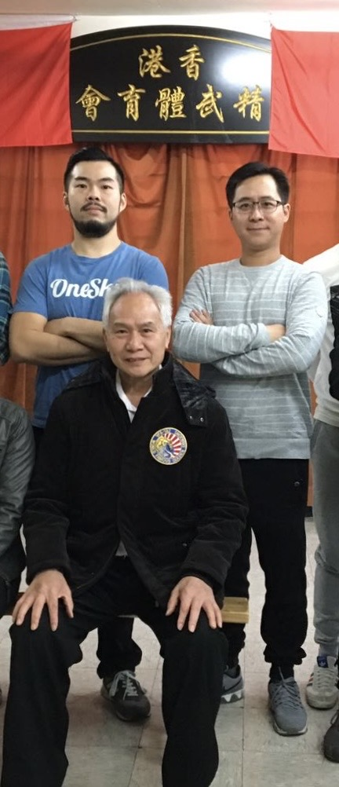
Grandmaster Chu Shiu Kei photo with Sifu Angus and disciples in HK Chin Woo (2017)Grand Master Chu Shiu Ki has earned numerous titles and accolades throughout his martial arts career, reflecting his dedication and mastery of Choy Lee Fut Kung Fu.
During the 1970s, Grand Master Chu authored a series of books on Choy Lee Fut Kung Fu, covering topics such as Wooden Dummy Techniques, Dragon Form, Tiger Form, and Snake Form.
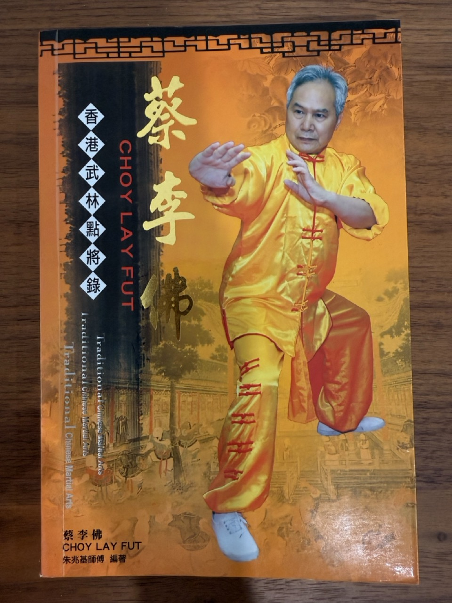
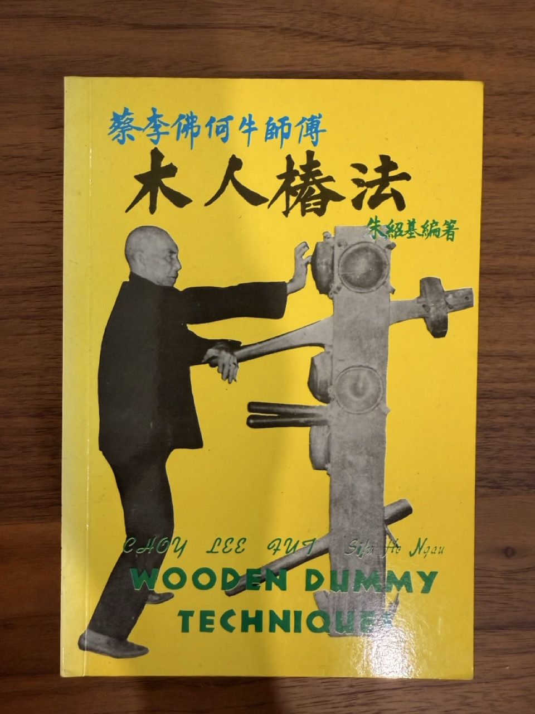
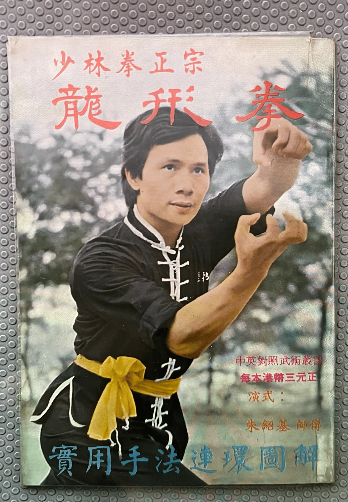
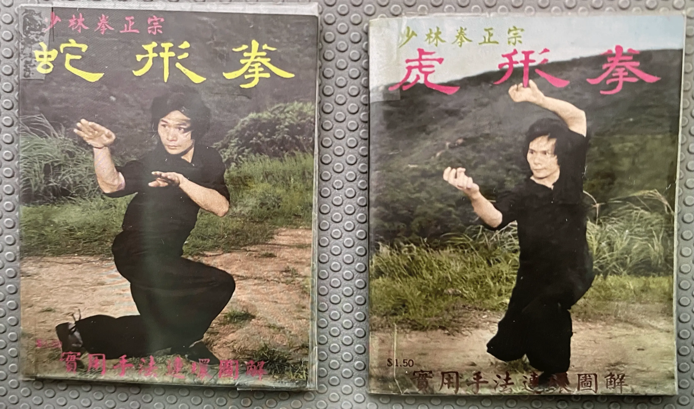
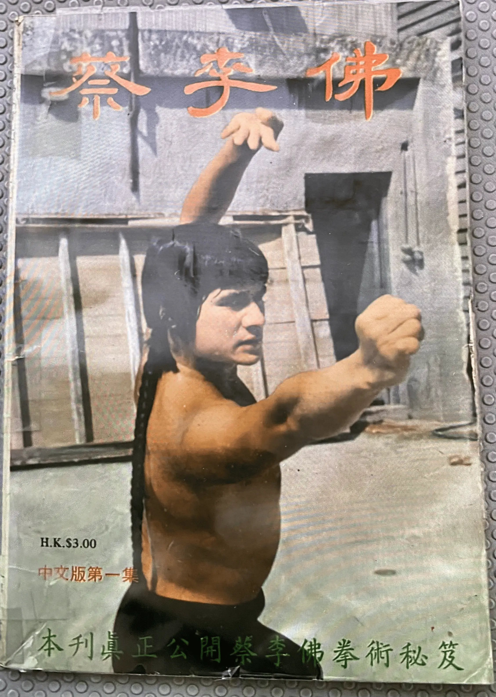
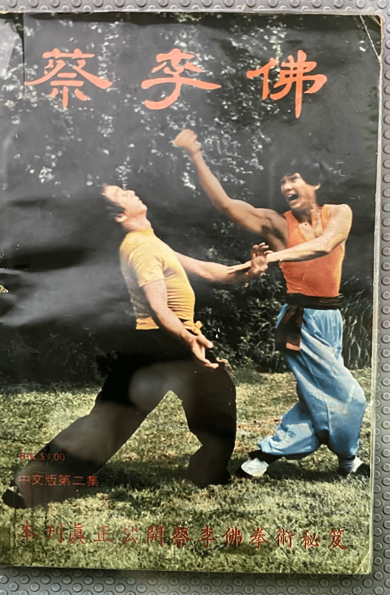
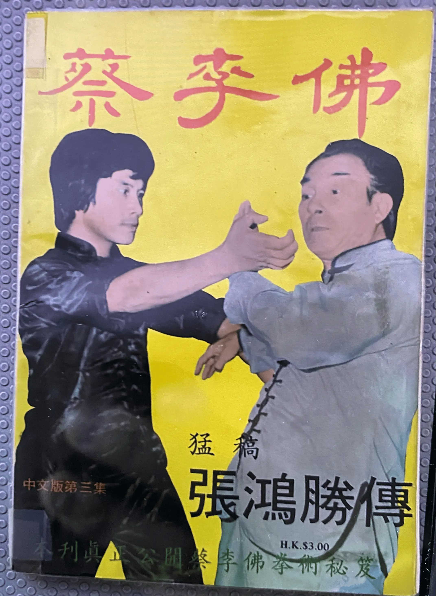
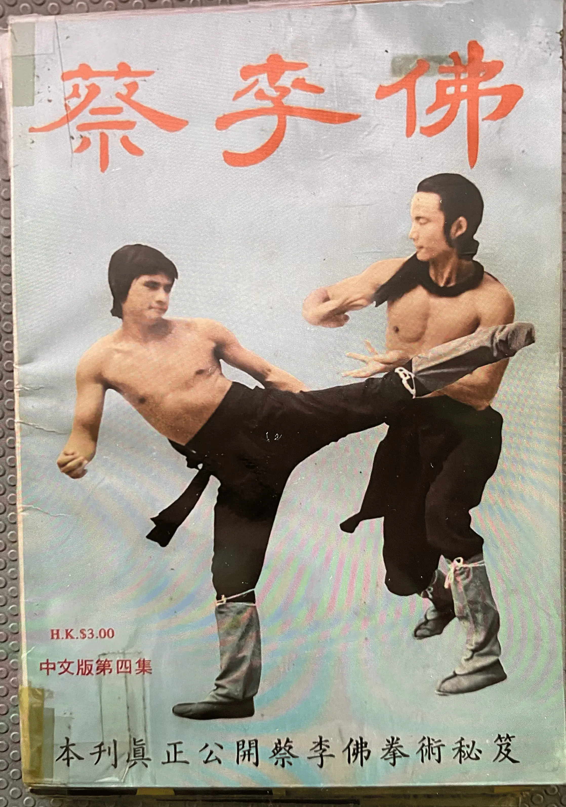
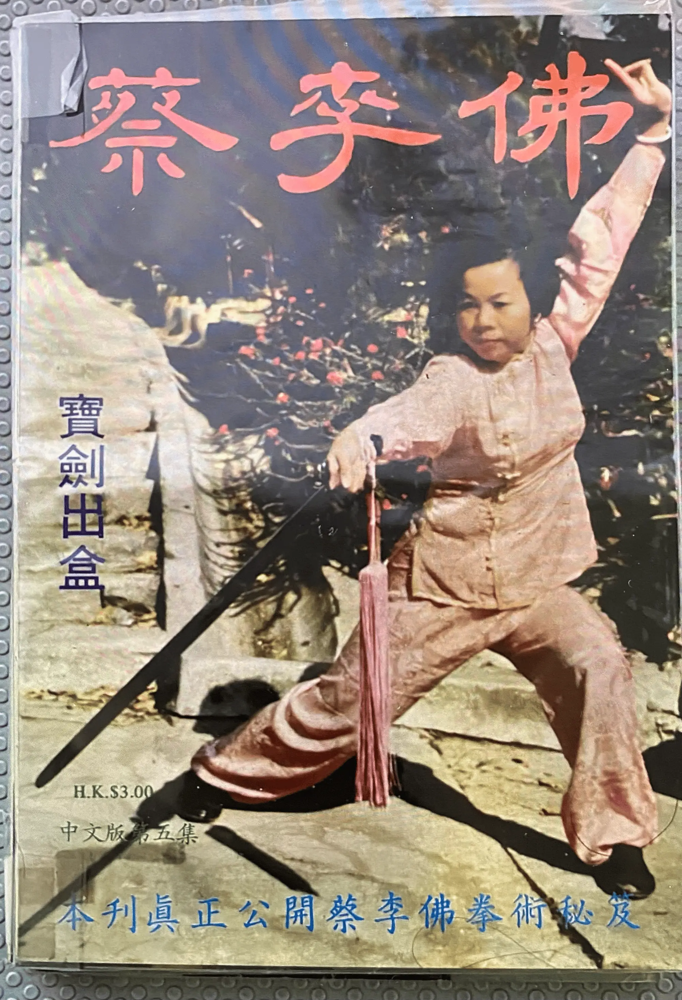
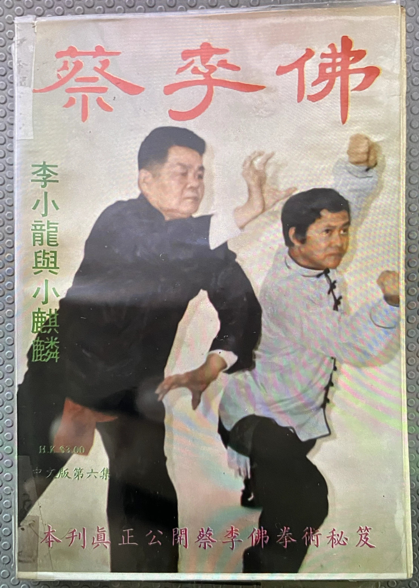
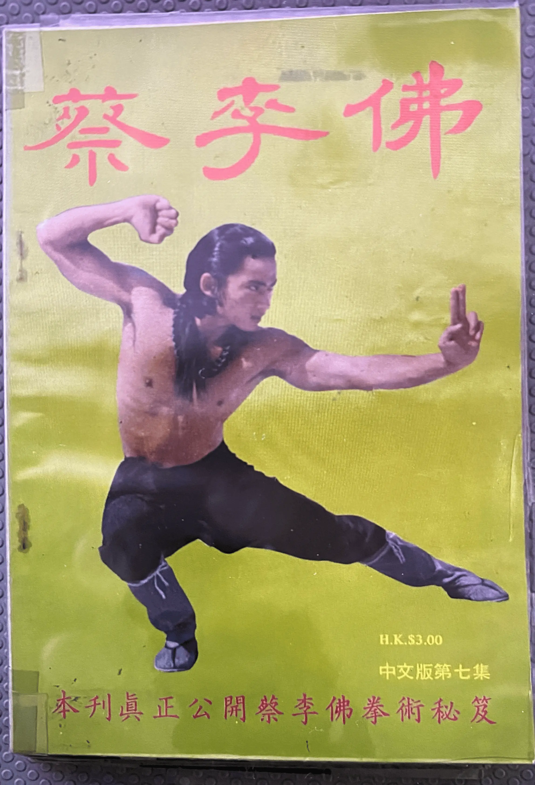
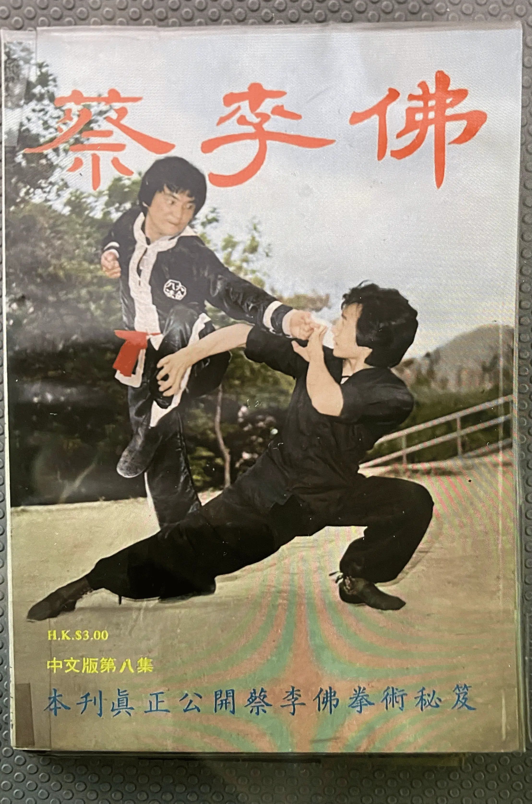
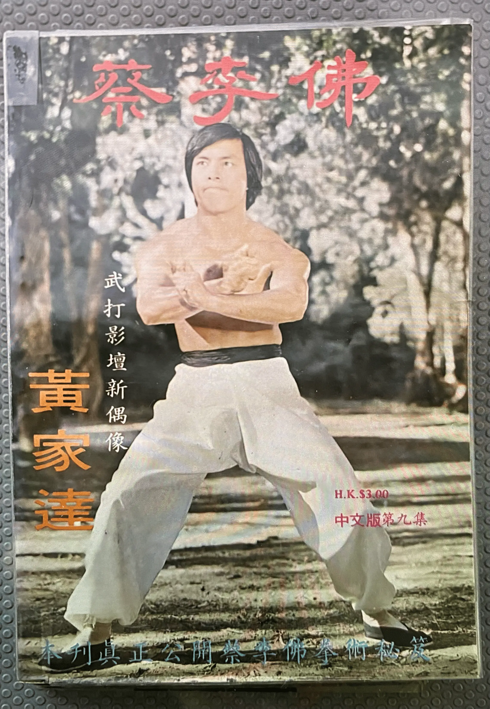
Some Photos provided by Sifu Eric Chu 朱建霖師傅.
Thank you for preserving the legacy of Choy Lee Fut Kung Fu.
📸 Follow us on Instagram for more updates!